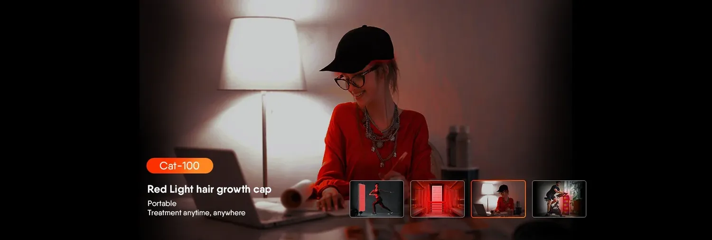

Product engineering
Fixture design, installation methods, thermal design, packaging engineering and optical test coverage.
APTREDLIGHT PRODUCT SOURCING
A large-format direction for professional wellness locations and premium private-label programs.

OEM / ODM PROCUREMENT CHECKLIST
Fixture design, installation methods, thermal design, packaging engineering and optical test coverage.
Request model-specific wavelength allocation, irradiance measurement conditions, applicable safety reports and user instructions.
Confirm packaging artwork, manuals, certifications applicable to your intended market, production QC expectations, lead times and after-sales terms.
This is a sourcing and configuration page, not a certified specification sheet. Images may show the broader product family. Do not rely on any unconfirmed output, certification or medical claims; request documentation for the exact quoted configuration.
NEXT STEP
Tell us your destination market, annual volume, target specification, logo/packaging needs and launch schedule.
Need a supplier comparison worksheet? Download the free OEM / Private Label Buyer’s Checklist (PDF) ↓
For this full-body red light therapy equipment sourcing discussion, confirm coverage, stand compatibility, installation space and shipping dimensions. Ask for the exact quoted configuration and approve a sample before committing to production.
APTREDLIGHT accepts OEM/ODM inquiries. Share your target market, brand artwork, packaging, manual requirements and estimated quantity. Available changes, MOQ, sample cost and production timing must be confirmed in the written quotation.
Request the wavelength allocation, electrical input, dimensions, controller functions, warranty terms and relevant test reports for the exact SKU. For irradiance comparisons, request the measurement distance, instrument, measurement grid and operating mode. Product-family photos do not verify the exact model.
Compare product formats and read OEM sourcing answers · Review quality checkpoints · Browse all product categories